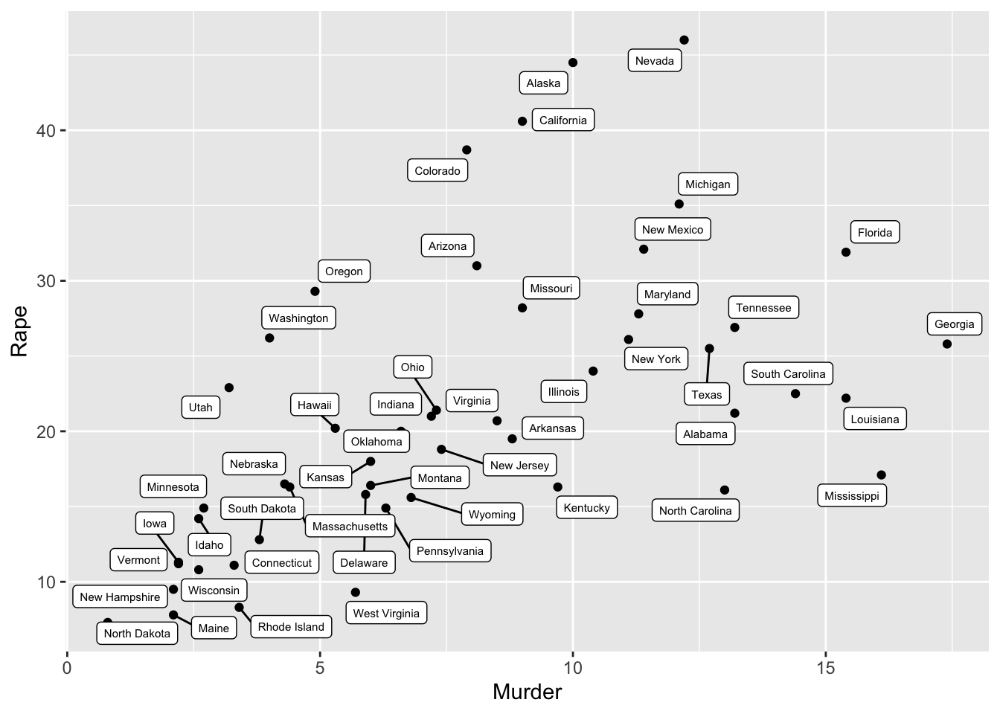

Cours 5 Analyse bivariée et corrélation II
Jusqu’à maintenant, on a passé en revue :
- l’étude univariée d’une variable qualitative ou d’une variable quantitative (cours 2 et 4).
- l’étude de la corrélation entre deux variables qualitatives (cours 3)
Le cours de cette semaine est destiné à présenter les notions essentielles impliquées dans l’étude de la corrélation entre plusieurs variables quantitatives. La première partie du cours présente la représentation graphique associée à une telle étude, la notion de covariance et le modèle de la régression linéaire, tandis que la seconde partie aborde les questions d’inférence statistique avec la présentation d’un nouveau test d’hypothèse, le t-test.
5.1 Deux variables quantitatives
Étudier la corrélation entre deux variables quantitatives permet en général d’utiliser un plus grand nombre d’outils que l’étude des variables qualitatives, car il est possible de faire des calculs à partir des modalités des variables considérées. Certaines représentations graphiques sont aussi plus adaptées à l’étude des variables quantitatives.
5.1.1 Représenter deux variables quantitatives
Lorsqu’on souhaite observer les liens entre deux variables quantitatives, on représente en général un nuage de points. Il s’agit d’un graphique dans lequel chacune des variables est représentée selon un axe (l’une en abscisses, l’autre en ordonnées), ce qui permet de positionner chaque individu statistique à partir des valeurs associées à chacune des variables, qui seront alors ses coordonnées dans le plan.
ggplot(USArrests) + geom_point(aes(x = Murder, y = Rape))Figure 5.1: Un exemple à partir des données USArrests : chaque point représente un état des États-Unis, dont la position dépend de son taux d’arrestation pour meurtres (pour 100 000 habitants, selon x) et pour viol (pour 100 000 habitants, selon y) en 1974
Sur cet exemple, chaque point représente un État des États-Unis. Plus le point est situé à droite du graphe, plus le taux d’arrestation pour meurtre correspondant est important. De même, plus il est situé en hauteur sur le graphe, plus le taux d’arrestation pour viol est important (les données datent de 1974).
Pour avoir une idée d’où se situent les différents État sur le graphe, on peut indiquer sur le graphe à côté de chaque point l’État auquel il correspond.

La forme du nuage de point permet caractériser le lien entre les variables : on observe ici qu’il y a peu d’État dans en haut à gauche ou en bas à droite du graphique. C’est-à-dire que lorsque le taux d’arrestation pour meurtre est faible dans un État, le taux d’arrestation pour viol l’est aussi. Il semble donc exister un lien de corrélation entre ces deux variables : lorsqu’une augmente, on observe en général que l’autre augmente également.
5.1.2 La covariance
La covariance est une grandeur qui permet de mesurer la corrélation entre deux variables quantitatives. C’est une généralisation de la variance dans le cas de deux variables. Elle mesure la moyenne du produit des écarts à la moyenne de deux variables X et Y :
\[ Cov(X, Y) = \frac{1}{N} \sum^N_{i = 1}(X_i - \bar{X})(Y_i - \bar{Y})\] On peut remarquer immédiatement que \(Cov(X,X) = Var(X)\), donc il s’agit bien d’une généralisation de la variance.
Pourquoi la covariance mesure-t-elle une corrélation entre X et Y ? On peut le comprendre à partir d’un exemple. Disons que X mesure la taille d’un individu i, et Y son poids. Lorsque X est supérieur à sa moyenne, on aura par définition \((X_i - \overline{X}) > 0\). Mais les personnes les plus grandes seront aussi en moyenne plus lourdes que la moyenne, donc on aura le plus souvent \((Y_i - \overline{Y}) > 0\). À l’inverse, les personnes qui sont plus petites que la moyenne seront aussi en moyenne plus légères, donc lorsque \((X_i - \overline{X}) < 0\) on aura la plupart du temps \((Y_i - \overline{Y}) < 0\). Les écarts à la moyenne de X et Y auront donc le plus souvent le même signe, leur produit sera donc positif. Autrement dit, une corrélation positive entre les deux variables (c’est-à-dire le fait qu’une augmentation de X est généralement associée à une augmentation de Y) a pour conséquence une covariance positive. On pourrait montrer de la même manière qu’une corrélation négative induit une covariance inférieure à 0. Enfin, lorsque la covariance de X et Y est nulle, on dit que les deux variables sont indépendantes : la valeur de l’une n’a en moyenne pas de lien avec la valeur de l’autre.
La covariance permet donc de retranscrire numériquement l’idée de
corrélation. On peut par exemple la calculer pour les deux variables Murder
et Rape représentées plus haut (figure 5.1).
cov(USArrests$Murder, USArrests$Rape)## [1] 22.99141On obtient bien un coefficient positif, comme le suggérait l’allure du nuage de points représenté. Le problème avec la covariance, c’est qu’au delà de son signe il est difficile de lui attribuer une signification. Cela est du fait que sa valeur dépend des unités de \(X\) et de \(Y\). On préfèrerait un indice compris entre \(-1\) et \(1\).
Pour l’obtenir, on calcule ce qu’on appelle le coefficient de corrélation de Pearson. Il règle le problème de l’unité de la covariance en la divisant par les écarts types de \(X\) et de \(Y\) :
\[ r_{XY} = \frac{Cov(X,Y)}{\sigma_{\bar{X}}\sigma_{\bar{Y}}} \]
En normalisant la covariance, on conserve ses propriétés intéressantes, mais on obtient un indicateur plus facile à interpréter. Lorsque le coefficient de corrélation est égal à 1, les deux variables sont parfaitement corrélées. Si l’on représente leur nuage de points, on doit voir une droite de pente positive. À l’inverse, un coefficient de corrélation égal à -1 correspond à une droite de pente négative. Le coefficient mesure donc l’intensité de la corrélation : s’il est proche de 0, les variables sont faiblement corrélées, s’il est proche de 1 ou de -1, elle le sont fortement. Voici le résultat qu’on obtient pour notre exemple :
cov(USArrests$Murder, USArrests$Rape)/(sd(USArrests$Murder)*sd(USArrests$Rape))## [1] 0.56357885.2 La regression linéaire
La méthode de la régression linéaire consiste à modéliser la relation entre deux variable quantitative par une droite, et cela même lorsque le coefficient de corrélation entre ces deux variables n’est pas égal à 1 ou -1. Graphiquement, il s’agit de trouver la droite qui résume le mieux le lien entre les deux variables.
Dans cette partie, on prendra comme exemple le jeu de données fictives parenthood proposé par Dan Navarro (Navarro 2015). Il contient plusieurs
variables. L’une d’entre elles est le “niveau de mauvaise humeur de Dan”
: on imagine qu’il le note chaque jour, en lui attribuant un score entre
0 et 100 (0 lorsqu’il est parfaitement de bonne humeur, 100 lorsqu’il est parfaitement de mauvaise humeur). La seconde variable que l’on va utiliser est son temps de sommeil.
L’objectif est de trouver la droite qui résume le mieux le nuage de points. À gauche, la meilleure regression, à droite, une autre beaucoup moins bien
Vous pouvez remarquer que les deux variables n’ont pas vraiment le même statut. La question que l’on va se poser est l’effet du temps de sommeil sur la mauvaise humeur de Dan. On dit que la variable “mauvaise humeur” est la variable à expliquer, tandis que la variable “temps de sommeil” est la variable explicative.
5.2.1 Principe de la régression
Comme il s’agit de modéliser la relation entre ces variables par une ligne droite, commençons par écrire l’équation d’une ligne droite :
\[ y = ax + b \]
\(y\) et \(x\) sont deux variables, et \(a\) et \(b\) deux coefficients : ce sont les nombres que l’on cherche à déterminer. On peut remarquer que l’asymétrie entre les deux variables se retrouve dans l’équation : \(y\) est la variable à expliquer, et \(x\) la variable explicative.
- \(a\) est la pente de la droite (c’est-à-dire l’augmentation de \(y\) lorsque \(x\) augmente d’une unité)
- \(b\) est l’ordonnée à l’origine (c’est-à-dire la valeur de \(y\) quand \(x = 0\))
La formule qu’on utilise pour décrire une droite de régression est très similaire :
\[ \hat{Y}_i = b_1X_i + b_0\]
- on note \(X_i\) et \(Y_i\) plutôt que \(X\) et \(Y\) pour bien indiquer que cette relation est valable pour chacune des observations
- on note \(\hat{Y}_i\) plutôt que \(Y_i\), pour faire la différence entre les valeurs observées \(Y_i\), et les valeurs estimées \(\hat{Y}_i\), ce sont les valeurs qui sont prédites à partir du modèle.
- on note les coefficients \(b_1\) et \(b_0\) plutôt que \(a\) et \(b\) (ce qui permettra plus tard d’ajouter \(b_2\), \(b_3\), etc.).
Puisque notre estimation n’est pas parfaite, c’est-à-dire qu’elle diffère des données observées, il existe une différence entre les données observées et les données estimées qu’on appelle résidus :
\[ \epsilon_i = Y_i - \hat{Y}_i\] L’expression des résidus permet de réécrire l’équation du modèle de cette manière :
\[ Y_i = b_1X_i + b_0 + \epsilon_i \] La question est alors de savoir quel critère retenir lorsqu’on cherche “la meilleure droite de régression.” La figure suivante représente la grandeur des résidus pour deux droites de régression. Sur la gauche, on a l’intuition que la droite est une meilleure estimation du nuage de points : les résidus sont aussi en moyenne plus faibles.
Figure 5.2: Une représentation graphique des résidus associés aux deux droites de régression. On remarque que les résidus sont moins grands en moyenne dans le premier cas que dans le second
5.2.2 Estimer une droite de regression
C’est ce critère que l’on va retenir pour déterminer quelle est la meilleure droite de régression. Les coefficients estimés, \(b_0\) et \(b_1\) sont ainsi ceux qui minimisent la somme des carrés des résidus, qu’on peut écrire :
\[ \sum^{N}_{i = 1} (Y_i- \hat{Y}_i)^2 \]
ou encore :
\[ \sum^{N}_{i = 1} \epsilon_i^2 \]
On appelle cette méthode d’estimation des coefficients la méthode des moindres carrés ordinaires. Trouver les coefficients qui minimisent la somme des carrés des résidus est un problème purement mathématique. L’idée est que vous n’avez pas besoin de savoir comment faire, mais que R peut le faire pour vous à l’aide de la fonction lm().
5.2.3 Utiliser la fonction lm() dans R
La fonction lm() (pour linear model) est assez compliquée : si vous tapez ?lm dans la console, vous verrez qu’il existe un grand nombre de manières d’utiliser cette fonction. Mais à ce stade, parmi les arguments qu’on peut passer à la fonction, il y en a seulement deux qui nous intéressent :
formula. Uneformulapermet de préciser le modèle proposé pour la régression. Pour la régression linéaire simple, la formule est simplementy ~ x, oùyest la variable à estimer, etxla variable explicative.data. La base de données où sont présentes les variables.
Le produit de la fonction lm est un amalgame d’information qu’on ne peut lire qu’à l’aide d’autres fonctions. En général, on stocke le résultat de la fonction lm dans un objet dédié :
regression.1 <- lm(formula = dan.grump ~ dan.sleep, data = parenthood)
print(regression.1)##
## Call:
## lm(formula = dan.grump ~ dan.sleep, data = parenthood)
##
## Coefficients:
## (Intercept) dan.sleep
## 125.956 -8.937R nous donne les deux résultats principaux de cette régression linéiare : les coefficients \(b_0\) et \(b_1\). En d’autres termes, la meilleure droite de régression que l’on a représentée plus haut est la droite d’équation :
\[ \hat{Y}_i = -8.94 X_i + 125.96 \] Qu’est-ce-que cela signifie ? Selon notre modèle linéaire, le temps de sommeil de Dan Navarro est corrélé négativement à sa mauvaise humeur. C’est ce qu’indique le coefficient \(b_1 = -8.94\) : lorsque Dan dort une heure de plus, sa mauvaise humeur diminue en moyenne de 8.94 points. L’autre coefficient \(b_0 = 125.96\) indique l’ordonnée à l’origine, c’est-à-dire le score de mauvaise humeur attendu dans le cas où Dan ne dort pas du tout. Il est ici incohérent avec la définition de ce score (qui est entre 0 et 100), ce qui permet de constater qu’une estimation linéaire ne produit pas nécessairement des valeurs qui ont du sens.
Pourquoi appelle-t-on cette équation un modèle linéaire ? Pour le comprendre, il suffit de bien se représenter ce que signifient les deux termes de l’équation. À gauche, il s’agit de notre estimation de la variable Y (d’où le chapeau sur le Y). À droite, X n’a pas de chapeau, c’est donc la valeur observée du temps de sommeil de Dan. L’équation a un caractère prédictif : elle permet de calculer le score de mauvaise humeur de Dan attendu pour différentes valeurs de son temps de sommeil.
On peut constater qu’avec ces seuls résultats, nous ne sommes pas en mesure d’évaluer la qualité de l’estimation produite par le modèle de régression linéaire. On sait qu’il s’agit de la meilleure droite, mais rien n’indique que le modèle linéaire (le fait d’estimer le nuage de point par une droite) est vraiment approprié. On verra dans le prochain cours comment évaleur la qualité de l’estimation.
5.3 Le t-test
On a vu dans le cours précédent comment la distribution t permettait de produire des intervalles de confiance lorsqu’on cherche à inférer à partir d’un échantillon la moyenne d’une variable quantitative. Cette distribution est largement utilisée pour produire des tests d’hypothèse. Je vous en présente ici différentes versions. La première est très proche de l’estimation d’un intervalle de confiance qui a été abordée au cours précédent, la seconde permet d’utiliser la même méthode pour étudier des corrélations entre variables qualitatives et variables quantitatives.
5.3.1 t-test pour un seul échantillon
C’est un test statistique qui a été introduit par William Sealy Gosset, qui travaillait comme chimiste à la brasserie Guinness et a publié son travail sous le pseudonyme ‘A Student’ (Student, 1908). On parle encore aujourd’hui du t de Student.Pour rappel, on définit la distribution t de cette manière :
\[ t = \frac{\bar{X} - \mu}{\hat{\sigma}/\sqrt{N}}\] où \(\bar{X}\) est la moyenne de l’échantillon, \(\mu\) est la moyenne de la population, \(\hat{\sigma}\) l’estimation de l’écart-type.
On peut comprendre la question à laquelle son test cherchait à répondre : il prélevait un échantillon de Guinness et en mesurait différentes caractéristiques (par exemple le pourcentage d’alcool). Sa question était alors de savoir si cette caractéristique mesurée était suffisamment proche de celle attendue (ie. le degré d’alcool indiqué sur la bouteille de Guinness). On utilise ainsi le t test pour un échantillon dans le cas où on cherche à comparer la moyenne de cet échantillon à une valeur définie par ailleurs.
Le principe du test revient à faire l’hypothèse que la moyenne de la population est égal à la moyenne attendue (l’hypothèse nulle), puis d’estimer sous cette hypothèse la probabilité d’obtenir la valeur mesurée sur notre échantillon. Comme pour le test du \(\chi^2\), R va nous indiquer une p-value, qui indique la probabilité de se tromper si l’on accepte l’hypothèse nulle, c’est-à-dire la probabilité d’avoir mesuré par hasard une valeur proche de la valeur attendue.
Reprenons l’exemple de la semaine dernière avec notre échantillon de 20 individus de la base hdv2003. On se demande si 1.9 heures par jour est une valeur plausible pour la moyenne du temps passé à regarder la télévision de notre population.
t.test(d$heures.tv, mu = 1.9)##
## One Sample t-test
##
## data: d$heures.tv
## t = 1.0496, df = 19, p-value = 0.3071
## alternative hypothesis: true mean is not equal to 1.9
## 95 percent confidence interval:
## 1.482432 3.157568
## sample estimates:
## mean of x
## 2.32On observe donc qu’avec cet échantillon de 20 individus, il est difficile de rejeter l’hypothèse nulle. La p-value de 0.3 indique bien qu’il y a 30% de chances de se tromper si l’on rejette l’hypothèse nulle. On peut également remarquer que R nous indique l’intervalle de confiance à 95% de la moyenne, intervalle qui dans 95% des cas capture la moyenne de la population entre ses bornes.
Répétons le test avec un échantillon de 200 individus sélectionnés aléatoirement parmi les 2000 individus de hdv2003 :
d <- sample_frac(hdv2003, size = 0.1)
t.test(d$heures.tv, mu = 1.9)##
## One Sample t-test
##
## data: d$heures.tv
## t = 2.9361, df = 199, p-value = 0.003715
## alternative hypothesis: true mean is not equal to 1.9
## 95 percent confidence interval:
## 2.024127 2.531873
## sample estimates:
## mean of x
## 2.278On observe cette fois ci que 1.9 n’est pas compris dans l’intervalle de confiance, et que la p-value est beaucoup plus faible. Ce qui nous permet de rejeter l’hypothèse nulle : la moyenne mesurée sur l’échantillon permet avec une certitude relative de conclure que la moyenne du temps passé à regarder la télévision dans la population n’est pas de 1.9 heures par jour.
5.3.2 t-tests pour des échantillons indépendants
Même si le t-test pour un échantillon peut être utile, on utilise plus souvent le t-test pour deux échantillons indépendants. L’idée est que l’on dispose de deux échantillons différents, et que l’on cherche à savoir si leurs deux moyennes sont égales (ou plus précisément, on cherche à savoir quelle est la probabilité que les moyennes des deux populations sont égales). Il est important de noter que les deux échantillons ne sont pas nécessairement deux échantillons aléatoires de la même population : ils peuvent avoir des caractéristiques différentes. Par exemple, on peut prendre un échantillon d’hommes et un échantillon de femmes et comparer les temps moyen de travail domestique correspondant. On trouvera normalement un temps plus élevé pour le groupe des femmes. Mais si l’on veut s’assurer qu’ils sont bien différents (c’est-à-dire que la différence ne s’explique pas par hasard lié à l’échantillonnage), on effectuera un t-test.
On définit alors la distribution t de cette manière :
\[ t = \frac{\bar{X}_1 - \bar{X}_2}{SE(\bar{X}_1 - \bar{X}_2)}\]
où
\[ SE(\bar{X}_1 - \bar{X}_2) = \hat{\sigma} \sqrt{\frac{1}{N_1} + \frac{1}{N_2}}\]
et l’on admettra que, si l’hypothèse nulle est vérifiée (les moyennes des deux échantillons sont égales), cette distribution suit une loi t à \((N_1+N_2-2)\) degrés de libertés, où \(N_1\) est l’effectif du premier échantillon et \(N_2\) celui du second. Pour plus de détails, je vous renvoie à la lecture de Navarro (Navarro 2015, chapitre 13).
Pour exemple, on peut prendre encore la variable heures.tv des données hdv2003. On va se demander si les actifs en emploi regardent autant en moyenne la télévision que les chômeurs et les inactifs (hypothèse nulle). J’ai créé une nouvelle variable act dans la table hdv2003 qui permet de distinguer les actifs en emploi (act = 1) des chômeurs et inactifs (act = 0). Pour faire le test dans R, on peut encore utiliser la fonction t.test() de cette manière :
t.test(heures.tv ~ act, data = hdv2003, var.equal = TRUE)##
## Two Sample t-test
##
## data: heures.tv by act
## t = 11.601, df = 1993, p-value < 2.2e-16
## alternative hypothesis: true difference in means between group 0 and group 1 is not equal to 0
## 95 percent confidence interval:
## 0.7429832 1.0453003
## sample estimates:
## mean in group 0 mean in group 1
## 2.715823 1.821681Comment lire les résultats de ce test ? R nous indique à la toute fin les moyennes calculées pour les deux échantillons : 2.7 pour le premier (les chômeurs et inactifs), et 1.8 pour le second (les actifs en emploi). Le test permet de quantifier la probabilité que la différence entre ces deux moyennes est due au hasard, à partir de l’estimation de la valeurs de la distribution \(t = 11.378\). La p-value associée montre que cette probabilité est très faible. R donne également l’intervalle de confiance à 95% de la différence entre ces deux moyennes : on remarque que 0 ne fait pas partie de cet intervalle. Pour commenter ce test, on pourrait écrire quelque chose comme ça :
Le temps quotidien passé à regarder la télévision est en moyenne de 2.7 heures pour les chômeurs et inactifs et de 1.8 heures pour les actifs en emploi. Un test de Student pour deux échantilons indépendant montre que cette différence est significative (\(t = 11.378\), \(p < 0.05\)), ce qui suggère l’existence d’un lien de corrélation entre l’activité et le temps passé à regarder la télévision.
Cette forme de t-test permet donc d’estimer l’existence d’une corrélation entre une variable qualitative (ici l’activité) et une variable quantitative (ici le temps passé à regarder la télévision).
Un élément important que je n’ai pas évoqué est l’ensemble des hypothèses que doivent vérifier les deux variables pour que cette méthode soit correcte. Il y a trois hypohtèses :
- La normalité. On fait l’hypohtèse que la variable quantitative est distribuée selon une loi normale.
- L’indépendance. Les observations doivent être indépendantes les unes des autres.
- L’homogénéité de la variance (aussi nommé homoscédasticité). Cette troisième hypothèse implique que l’écart-type de la population est le même pour les deux groupes (ici les actifs occupés et les autres).
Cette troisième hypothèse est en général peu réaliste car si l’on compare des populations différentes, il n’y a pas de raison pour que l’écart-type soit le même. Pour s’affranchir de cette hypothèse, on peut utiliser encore un autre test, le t-test de Welch. Ce test suit exactement le même principe que le test de Student : on définit t de la même manière, les seules différences sont dans l’estimation de l’erreur-type :
\[ SE(\overline{X_1} - \overline{X_2}) = \sqrt{\frac{\hat{\sigma_1}^2}{N_1} + \frac{\hat{\sigma_2}^2}{N_2}} \] qui dépend ici, contrairement au test de Student, des deux écart-types différents. Le nombre de degrés de liberté change égalament :
\[ df = \frac{(\hat{\sigma_1}^2/N_1 + \hat{\sigma_2}^2/N_2)^2}{(\hat{\sigma_1}^2/N_1)^2/(N_1-1) + (\hat{\sigma_2}^2/N_2)^2/(N_2-1)}\] On ne va pas commenter cette formule, je vous l’indique simplement pour que vous ne soyez pas surpris que le nombre de degré de liberté ne sera pas égal à un entier, ça peut ici être n’importe quel nombre positif. Il est en général un peu plus faible que le nombre de degrés de liberté utilisé pour le test de Student.
Le test se fait dans R de la même manière que le test de Student, avec l’option var.equal = TRUE en moins. Il s’agit en fait de la sorite par défaut de la fonction t.test(). Ce qui s’affiche est tout à fait similaire à ce que l’on a déjà vu.
t.test(heures.tv ~ act, data = hdv2003)##
## Welch Two Sample t-test
##
## data: heures.tv by act
## t = 11.378, df = 1616.4, p-value < 2.2e-16
## alternative hypothesis: true difference in means between group 0 and group 1 is not equal to 0
## 95 percent confidence interval:
## 0.7399966 1.0482870
## sample estimates:
## mean in group 0 mean in group 1
## 2.715823 1.821681